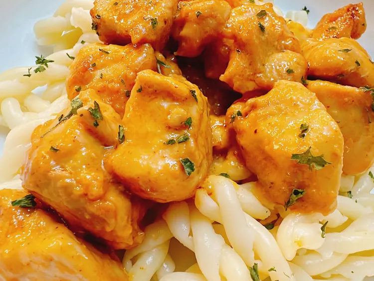

Back
Creamy Garlic Butter Chicken Bites

Ingredients
- 2 teaspoons granulated garlic
- 3/4 teaspoon granulated onion
- 3/4 teaspoon Hungarian sweet paprika
-
1 pound skinless, boneless chicken breasts, cut into 1-inch pieces
- 1 tablespoon oil, divided
- 3 tablespoons butter, divided
- 7 cloves garlic, minced, or to taste
- 3 tablespoons heavy cream
Directions
-
Whisk salt, garlic granules, onion granules, and paprika together in a
small bowl. Toss chicken in a bowl with 1 teaspoon oil and seasoning
mixture; set aside.
-
Melt 1 tablespoon butter in a heavy skillet. Add remaining 2 teaspoons
oil. Add chicken to skillet and cook and stir until no chicken pieces
are longer pink at the center, 7 to 8 minutes.
-
Move chicken to the back side of the skillet. Add remaining 2
tablespoons butter. Add minced garlic, and saute until fragrant, about
30 seconds. Stir in cream. Move chicken back to center of skillet; stir
into sauce to coat.